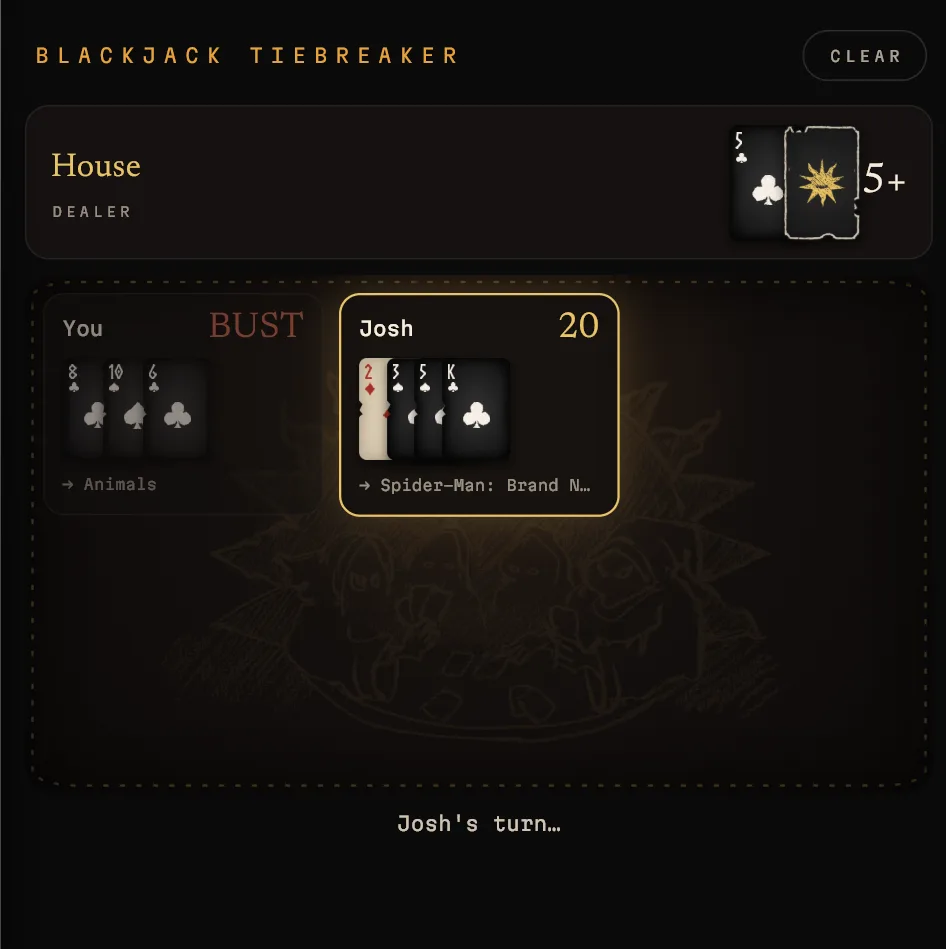

How to host a Discord movie night.
Discord handles the social side of movie night beautifully. Where it falls short is everything that happens before the opening credits: a dozen half-hearted suggestions, nobody willing to commit, and suddenly it’s 10:40 and the snacks are gone. With a little structure, you can skip all of that and get to the film.
1. Set the stage
Two channels are all you need. A voice channel carries the stream, and a text channel collects the links, the running commentary and, inevitably, the debate about what the ending actually meant.
Then schedule it as a Discord event. Events sit at the top of the server and send a reminder when they begin, which quietly does more for attendance than any number of @everyone pings. A standing slot helps too. “Fridays at nine” becomes a habit in a way a new date every week never does.
2. Give the group one watchlist
Recommendations made in chat rarely survive the week. Someone mentions a film on Tuesday, it sinks beneath a tide of memes, and by Friday nobody can remember the title.
A shared watchlist in Kuvacult gives every suggestion somewhere to live. Anyone can add to it the moment inspiration strikes, so by movie night you’re choosing from a real shortlist instead of starting from nothing. If your friends already keep a Letterboxd diary, they can import their history, and you’ll know who has already seen what before anyone presses play.
Bingeing a franchise? Grab a key from our watch orders and the entire series arrives on the list in the correct order. At one film a week, that’s your next few months settled.
3. Let the cards decide
This is the moment most movie nights unravel. If everyone has the Kuvacult app, play Veto Sacrifice: you take turns striking films from the watchlist until a single survivor remains.
Of course, half your server is probably on a phone or a Mac, and that’s no obstacle. The movie night picker runs in any browser. Each person names a film, everyone plays a single hand of blackjack, and whoever lands closest to 21 wins. Their film is tonight’s feature, and the debate is officially closed.

One person opens the movie night picker and creates a room.
Post the room code, or the invite link, in your text channel.
Everyone joins from whatever device is closest to hand and enters their film. There’s always a latecomer; they can still join and are dealt into the next hand.
Hit or stand. Go over 21 and you’re out. The closest hand wins, and a tie simply means another deal.
The whole thing takes about two minutes, and there’s something about losing a pick fair and square that makes it far easier to accept.
When nobody has an opinion, spin the wheel
Some evenings the trouble isn’t too many suggestions but none at all. Open the movie roulette, place a genre or two on the table and spin. The wheel draws from a curated list of cult classics, so you land on something with a devoted following rather than whatever the streaming homepage is promoting this week. You can also paste in your group’s own shortlist and let the wheel choose from that.
4. Go Live
Join the voice channel, start a screen share and select the window playing the film. Make sure sound sharing is switched on, unless you’ve all agreed to a silent film, and ask everyone to mute their mics once it begins.
Free accounts stream at a lower resolution than Nitro, though for a group watch the difference is rarely a dealbreaker.
If a streaming service shows a black screen when shared, that’s DRM at work. Netflix, Disney+ and most other services block screen capture on purpose, and no screen-sharing tool gets around it. For those films, have everyone press play on their own account with a sync extension. Our guide to watching movies together online walks through how.
Screen sharing really comes into its own with films you own. Keep your collection on a Plex server and you can share anything in it without a black screen in sight. We explain how in our guide to setting up a Plex server at home.
Want something more immersive than a Discord call? Kuvacult has its own screen sharing built in, called a séance. It’s still in beta, but it puts the watchlist, the stream and everyone’s diary in one place.
5. Keep a record
Once the credits roll, everyone logs and rates the film in their diary. After a few months you’ll have a complete archive of movie night: every film, who chose it, and irrefutable evidence of whose taste should never be trusted again.
Questions
How do I host a movie night on Discord?
Create a voice channel, schedule it as an event, choose the film, then share your screen with Go Live and switch on sound sharing. A shared watchlist and a quick picker game keep the evening from stalling on the decision.
How do we decide what to watch as a group?
Try the free movie night picker. One person creates a room, everyone joins from their own phone, and a hand of blackjack settles whose film wins.
Does the blackjack picker work on phones?
Yes. It runs in the browser, so friends on iPhone, Android, Mac or PC can all join the same room with the code.
Why is my Discord stream a black screen?
Most streaming services use DRM, which blocks screen capture. Have everyone watch on their own account with a sync extension instead, or share a film you own from a Plex server.
Do I need the Kuvacult app?
No. The movie night picker and movie roulette work in the browser without an account. The app adds the shared watchlist, Veto Sacrifice, séances and a diary.
Watch it with your friends.
Kuvacult is a free movie tracker with shared watchlists, a veto game for picking movie night, and séances for watching together.